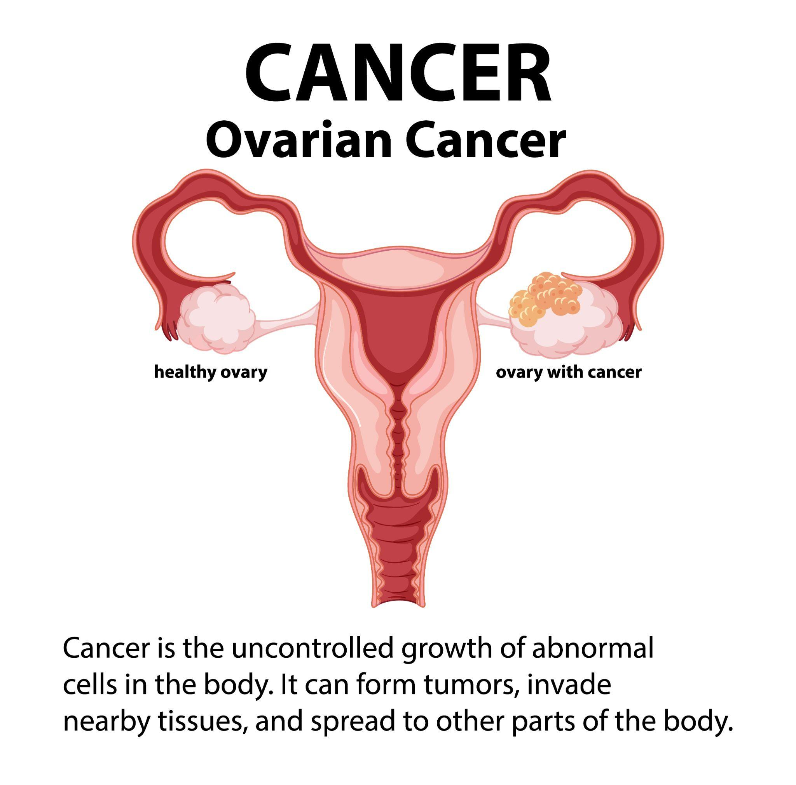
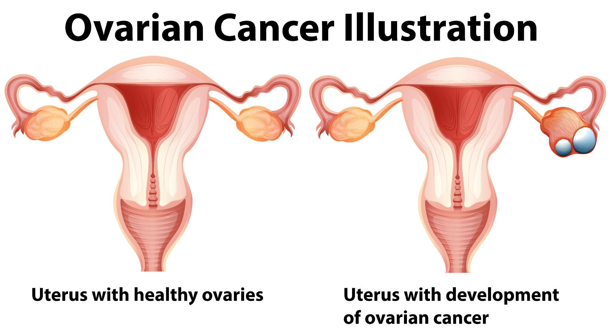

Ovarian Cancer


Ovarian Cancer
When unhealthy cells in the ovaries start to multiply uncontrollably, it can lead to ovarian cancer and ultimately develop into a tumour. Cancer cells slowly spread into the surrounding tissues if not detected early. They could disperse to different body parts.
Ovarian Tumour Types
Ovarian tumours are classified into three types based on the tissue of origin:
- Epithelial cell tumours: The cells covering the ovary's surface give rise to these tumours. Most ovarian tumours are epithelial cell tumours.
- Germ cell tumours: These tumours originate from the cells that produce the eggs in the ovary.
- Stromal cell tumours: These tumours grow in the ovary's structural tissue cells that are in charge of generating female hormones.
Most ovarian tumours are benign, meaning they are not cancerous. When treating benign ovarian tumours, medical professionals may decide to remove the entire ovary or the portion containing the tumour.
Extra-ovarian Primary Peritoneal Carcinoma (EOPPC)
Epithelial ovarian cancer and EOPPC are closely related cancers. Its microscopic characteristics, prognosis, and national medical history are all the same as those of epithelial ovarian cancer. It takes place in the peritoneum, the lining of the abdomen, outside of the ovary (belly). Women who have had their ovaries removed may still develop this type of cancer because it happens outside the ovary.
EOPPC can cause an increase in the tumour marker CA-125 and mimic the symptoms of ovarian cancer. Treatment consists of surgery and chemotherapy, the same as for ovarian cancer.
Ovarian Cancer Symptoms
Many signs and symptoms of ovarian cancer are similar to those of other medical conditions. Understanding what is typical for you and paying attention to your body is crucial. These are the most common symptoms and signs of ovarian cancer. Symptoms may vary from person to person.
- Lower abdominal pain, including any or all of the following:
- Having bloated or swollen feelings
- A decrease in hunger or a filled feeling even after a small meal
- Nausea, indigestion, and gas
- Diarrhea, constipation or frequent urination
- Frequent fatigue
- Vaginal bleeding
- Accumulation of fluid around the lungs, which could result in breathlessness
It is advisable to consult a physician if these symptoms are new, occur nearly daily, or persist for several weeks. Many times, ovarian cancer does not show symptoms until it has progressed to the point where it has spread outside of the original ovary. Always get a diagnosis from your physician.
When Should I See a Doctor?
Schedule an appointment with your general practitioner if you experience unusual or persistent symptoms; they may recommend diagnostic tests. If a cancer is detected, you will be referred to a Gynecologic oncologist or oncologist to provide appropriate treatment options for ovarian cancer.
Ovarian Cancer Causes and Risk Factors
Ovarian cancer has no known cause. However, there are a few risk factors that can increase a woman's chances of getting cancer. Risk factors include:
- Age (over the age of 55)
- Hormone replacement therapy
- Infertility
- Personal history of breast or colon cancer
- Family history
- Modifications of the BRCA1 and BRCA 2 genes
- Few fertility drugs
- Obesity
Ovarian Cancer Prevention
A preventative strategy for ovarian cancer is unknown. Still, studies have indicated that women can reduce their risk by taking proactive steps.
- Consuming a healthy diet
- Staying at a healthy weight for a lifetime
- Taking birth control pills
- Deciding to become pregnant and breastfeed
- Having your ovaries surgically removed (oophorectomy) if at a high risk of developing ovarian cancer
Ovarian Cancer Diagnosis
A healthcare provider takes a medical history and conducts a pelvic exam to diagnose a medical condition of the reproductive system. The exam checks the vagina, rectum, and lower abdomen for any issues. The exam is conducted with sensitivity to ensure patient comfort and privacy.
The doctor might also prescribe additional tests, such as:
- Abdomen Ultrasound: An ultrasound scan uses sound waves to make pictures of the blood vessels and organs in your abdomen. The ultrasound scan of the abdomen shows abnormal growth and changes, including blood flow.
- Computed Tomography (CT or CAT Scan): This noninvasive diagnostic imaging technique creates horizontal or axial images (often called slices) of the body using computer technology and X-rays. The CT scan could detect enlarged lymph nodes, indicating a cancer or infection spreading.
- Blood Test: This is used to measure a blood component known as CA-125, a tumour marker that is frequently detected to be elevated in the blood of female ovarian cancer patients. It is more regularly employed to track how well a treatment is working. Since non-cancerous conditions can raise levels, it is not a screening test.
- Biopsy: During a biopsy, tissues or cells are taken out to be examined under a microscope for cancer indications.
Ovarian Cancer Treatment
Your doctor will determine the appropriate treatment specific to your ovarian cancer based on:
- Overall health and medical history
- Spread of the disease
- Tolerance for few medicines, procedures or therapies
- Expectations for the course of the disease
The treatment methods followed for ovarian cancer are:
- Radiation therapy: Also known as radiotherapy, is a common cancer treatment that uses high radiation doses to kill cancer or malignant cells and reduce the size of tumours.
- Chemotherapy: Chemotherapy uses powerful cancer drugs to fight cancer cells by restricting their growth, division, and reproduction. It is an effective systemic treatment that can target cancer cells in various body parts, making it suitable for many types of cancer.
- Target therapy: Target therapy targets the genes and proteins associated with that particular cancer, stopping the growth and spread of cancer cells while causing minimal damage to healthy, normal cells. The most typical adverse effects include fatigue, diarrhoea, and rash.
- Hormone therapy: Some types of ovarian cancer rely on hormones to grow. Hormone therapy has the potential to reduce or stop the growth of cancers.
After completing ovarian cancer treatment, you'll have follow-up appointments to check for any recurrence. Your healthcare provider may perform a thorough exam and order CT scans to monitor your health. Report any symptoms to your provider promptly.
Care at Omega Hospital
Omega Hospitals in India is a renowned healthcare institution specialising in exceptional cancer care services. The hospital has highly skilled and experienced oncologists who provide multidisciplinary treatment for ovarian cancer, ensuring comprehensive and effective patient treatment and promoting a speedy recovery.
Looking for high-quality and affordable medical treatment?
Choose Omega Hospitals for the best and most affordable cancer treatment
With a team of skilled medical professionals and advanced equipment, Omega Hospitals is dedicated to providing the best possible care to patients.